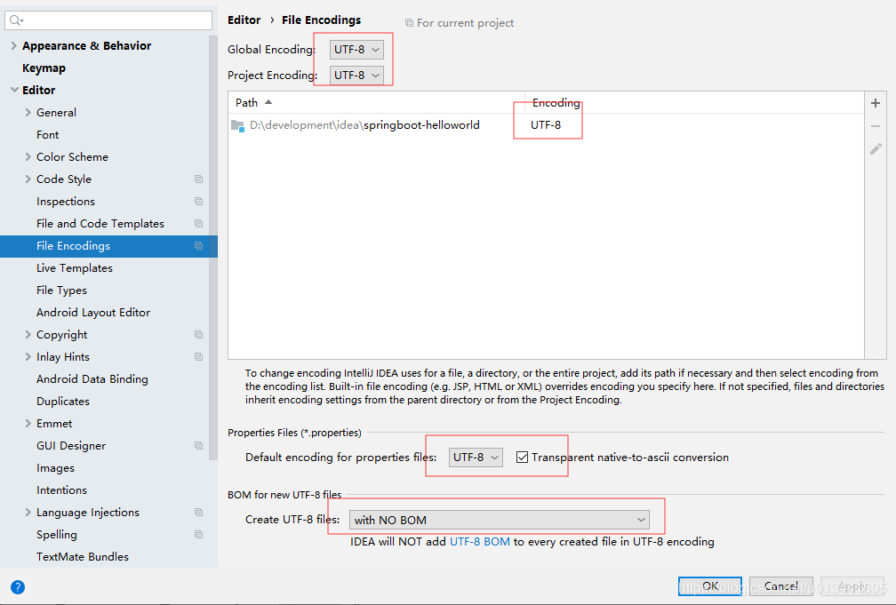
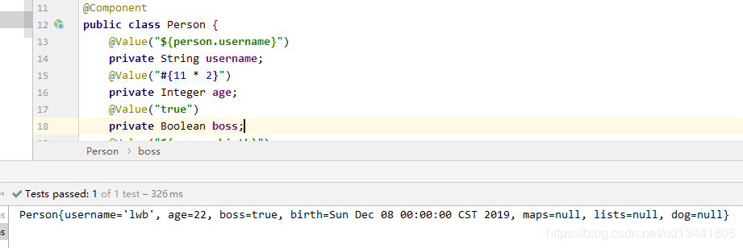

k 空格 v 表示一对键值对（必须有空格），以空格的缩进来控制层级关系，只要是左对齐的一列数据，都表示同一个层级。属性和值大小写敏感
1 server:
2 port: 8081
3 servlet-path: /hello① 字面量： 普通值
② 字符串默认不用加上单引号和双引号
③ 双引号不会转义字符串里面的特殊字符，也就是说如果字符串中有一个 \n 那么就会换行
④ 单引号会转义特殊字符，特殊字符最终只是一个普通字符串数据
比如有一个对象Person和一个Dog对象，如下：
public class Person {
private String username;
private Integer age;
private Boolean boss;
private Date birth;
private Map<String,Object> maps;
private List<Object> lists;
private Dog dog;
//get set toString 方法
}
public class Dog {
private String name;
private Integer age;
//get set toString 方法
}application.yml配置文件
person:
username: lwb
age: 18
boss: true
birth: 2019/12/8
maps: {name: wt, age: 16}
lists: [lwb, wt]
dog:
name: 小狗
age: 3上面的代码就是给对象Person 配置注入值的yaml写法
yaml中，按照缩进来控制层级，但是对象、map、数组、List、set等也可以有另一种写法。
#对象行内写法
person: {username: zhangsan,age: 20}
#数组（List、Set）
pets:
‐ cat
‐ dog
‐ pig
#或者
pets: [cat,dog,pig]person.age=18
person.birth=2019/12/7
person.boss=true
person.maps.k1=wt
person.maps.k2=19
person.dog.name=小狗
person.dog.age=3
person.lists=a,b,c要将配置文件中的值注入到javabean对象在，需要确定导入
<dependency>
<groupId>org.springframework.boot</groupId>
<artifactId>spring-boot-configuration-processor</artifactId>
<optional>true</optional>
</dependency>最终的实验环境为：
<dependencies>
<dependency>
<groupId>org.springframework.boot</groupId>
<artifactId>spring-boot-starter-web</artifactId>
</dependency>
<dependency>
<groupId>org.springframework.boot</groupId>
<artifactId>spring-boot-configuration-processor</artifactId>
<optional>true</optional>
</dependency>
<dependency>
<groupId>org.springframework.boot</groupId>
<artifactId>spring-boot-starter-test</artifactId>
<scope>test</scope>
</dependency>
</dependencies>
<build>
<plugins>
<plugin>
<groupId>org.springframework.boot</groupId>
<artifactId>spring-boot-maven-plugin</artifactId>
</plugin>
</plugins>
</build>要想将配置文件中的值，自动注入到上面的对象Person中，那么就需要将Person交给Spring来管理。因此需要在Person类上加上两个spring的注解：
@ConfigurationProperties(prefix = "person")
@Component
public class Person {
//如上面的属性
}@ConfigurationProperties：告诉SpringBoot将本类中的所有属性和配置文件中相关的配置进行绑定，prefix = “person”：配置文件中哪个下面的所有属性进行一一映射。有了上面的配置，那么就可以在我们想获取Person对象的地方自动注入Person对象，并且初始值和配置文件中的配置一致
@Service
public class PersonService {
@Autowired
private Person person;
public void getPerson() {
System.out.println(person);
}
}如二中，使用application.properties的写法所示，其实获取到的汉字可能是乱码，具体解决配置方式如下：

并且在application.properties文件中加上如下的配置：
spring.http.encoding.charset=utf-8
spring.http.encoding.force=true
spring.http.encoding.enabled=true可以使用spring原生注解@Value来注入值
@Component
public class Person {
@Value("${person.username}")
private String username;
@Value("#{11 * 2}")
private Integer age;
@Value("true")
private Boolean boss;
@Value("${person.birth}")
private Date birth;
private Map<String,Object> maps;
private List<Object> lists;
private Dog dog;
//get set toString
}
由上例子可以看见，所有的设置值都是简单类型的，如果给maps、lists、dog也加上注入值标签，会出现什么结果呢？
@Component
public class Person {
@Value("${person.username}")
private String username;
@Value("#{11 * 2}")
private Integer age;
@Value("true")
private Boolean boss;
@Value("${person.birth}")
private Date birth;
@Value("${person.maps}")
private Map<String,Object> maps;
@Value("${person.lists}")
private List<Object> lists;
@Value("${person.dog}")
private Dog dog;
// get set toString方法
}java.lang.IllegalStateException: Failed to load ApplicationContext
at org.springframework.test.context.cache.DefaultCacheAwareContextLoaderDelegate.loadContext(DefaultCacheAwareContextLoaderDelegate.java:132)
at org.springframework.test.context.support.DefaultTestContext.getApplicationContext(DefaultTestContext.java:123)
at org.springframework.test.context.web.ServletTestExecutionListener.setUpRequestContextIfNecessary(ServletTestExecutionListener.java:190)
at org.springframework.test.context.web.ServletTestExecutionListener.prepareTestInstance(ServletTestExecutionListener.java:132)
at org.springframework.test.context.TestContextManager.prepareTestInstance(TestContextManager.java:244)
at org.springframework.test.context.junit4.SpringJUnit4ClassRunner.createTest(SpringJUnit4ClassRunner.java:227)
at org.springframework.test.context.junit4.SpringJUnit4ClassRunner$1.runReflectiveCall(SpringJUnit4ClassRunner.java:289)
at org.junit.internal.runners.model.ReflectiveCallable.run(ReflectiveCallable.java:12)
at org.springframework.test.context.junit4.SpringJUnit4ClassRunner.methodBlock(SpringJUnit4ClassRunner.java:291)
at org.springframework.test.context.junit4.SpringJUnit4ClassRunner.runChild(SpringJUnit4ClassRunner.java:246)
at org.springframework.test.context.junit4.SpringJUnit4ClassRunner.runChild(SpringJUnit4ClassRunner.java:97)
at org.junit.runners.ParentRunner$3.run(ParentRunner.java:290)
at org.junit.runners.ParentRunner$1.schedule(ParentRunner.java:71)
at org.junit.runners.ParentRunner.runChildren(ParentRunner.java:288)
at org.junit.runners.ParentRunner.access$000(ParentRunner.java:58)
at org.junit.runners.ParentRunner$2.evaluate(ParentRunner.java:268)
at org.springframework.test.context.junit4.statements.RunBeforeTestClassCallbacks.evaluate(RunBeforeTestClassCallbacks.java:61)
at org.springframework.test.context.junit4.statements.RunAfterTestClassCallbacks.evaluate(RunAfterTestClassCallbacks.java:70)
at org.junit.runners.ParentRunner.run(ParentRunner.java:363)
at org.springframework.test.context.junit4.SpringJUnit4ClassRunner.run(SpringJUnit4ClassRunner.java:190)
at org.junit.runner.JUnitCore.run(JUnitCore.java:137)
at com.intellij.junit4.JUnit4IdeaTestRunner.startRunnerWithArgs(JUnit4IdeaTestRunner.java:68)
at com.intellij.rt.execution.junit.IdeaTestRunner$Repeater.startRunnerWithArgs(IdeaTestRunner.java:47)
at com.intellij.rt.execution.junit.JUnitStarter.prepareStreamsAndStart(JUnitStarter.java:242)
at com.intellij.rt.execution.junit.JUnitStarter.main(JUnitStarter.java:70)
Caused by: org.springframework.beans.factory.BeanCreationException: Error creating bean with name 'person': Injection of autowired dependencies failed; nested exception is java.lang.IllegalArgumentException: Could not resolve placeholder 'person.maps' in value "${person.maps}"可以看见直接报错，其实@ConfigurationProperties和@Value是有区别的，具体如下：
| @ConfigurationProperties | @Value | |
|---|---|---|
| 功能 | 批量注入配置文件中的属性 | 一个个指定 |
| 松散绑定（松散语法）(lastName --> last-name) | 支持 | 不支持 |
| SpEL | 不支持 | 支持 |
| JSR303数据校验 | 支持 | 不支持 |
| 复杂类型封装 | 支持 | 不支持 |
配置文件yml还是properties他们都能获取到值；如果说，我们只是在某个业务逻辑中需要获取一下配置文件中的某项值，使用@Value；如果说，我们专门编写了一个javaBean来和配置文件进行映射，我们就直接使用@ConfigurationProperties；